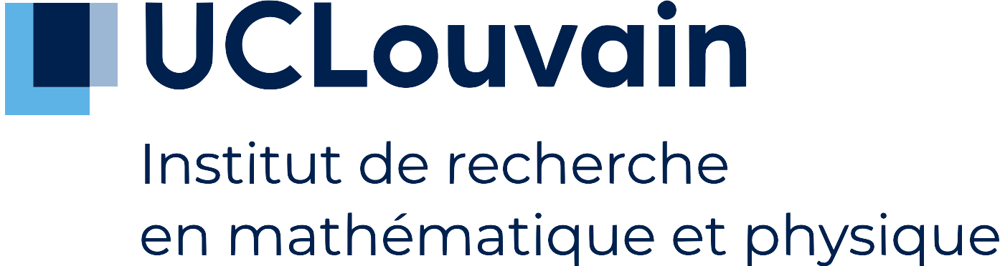

I am currently a FNRS research fellow (PhD student) at UCLouvain (Belgium),
I am currently a FNRS research fellow (PhD student) at UCLouvain (Belgium),
working under the supervision of Pedro Vaz.
Starting from October 2024, I will be in Bonn as a Max Planck's postdoctoral fellow.
Contact: firstname.lastname(at)uclouvain.be (firstname=leo, lastname=schelstraete)
 https://orcid.org/0000-0001-7167-3964
https://orcid.org/0000-0001-7167-3964
Research interests
My research interests lie in low-dimensional topology and higher representation theory.
I have also recently taken an interest in higher rewriting theory.
More precisely, I study quantum invariants of knots and 3-manifolds related to the representation theory of quantum groups. Both sides can be categorified: as homological invariants for the former (e.g. Khovanov homology) and as diagrammatic algebras for the latter (e.g. KLR algebras). I am interested in their interaction as well as their connection with various other fields.
On a related note, I have recently studied rewriting theory. In a nutshell, rewriting theory is the algorithmic study of presented algebraic structures. I am interested specifically in its application to higher diagrammatic algebras.
A list of my work and projects:
-
Linear Gray rewriting modulo and applications to super diagrammatic algebra, in preparation
Abstract.
TBA.
-
Higher Representation Theory and Odd Khovanov Homology, joint with Pedro Vaz, arXiv:2311.14394
Abstract.
We define a supercategorification of the $q$-Schur algebra of level two and an odd analogue to $\mathfrak{gl}_2$-foams. Using these constructions, we define an homological invariant of tangles, and show that it coincides with odd Khovanov homology when restricted to links. This gives a representation theoretic construction of odd Khovanov homology. In the process, we define a tensor product on the category of chain complexes in super-2-categories which is compatible with homotopies. This could be of independent interest.
-
Supercategorification and Khovanov-like tangle invariants, 2020, Master Thesis, available here
Research Talks
Upcoming
-
Odd Khovanov homology and higher representation theory,
Clermont-Ferrant, May 28 2024
-
Odd Khovanov homology and higher representation theory, EQuAL seminar, May 23 2024 (notes)
Previously
-
Odd Khovanov homology and higher representation theory, University of Oregon, algebra seminar, January 2024
-
Odd Khovanov homology and higher representation theory, JMM 2024: Special Session on Knots, Skein Modules, and Categorification, San Francisco, January 2024 (slides)
-
Odd Khovanov homology and higher representation theory,
Winter Braids in Tours, February 2023
(slides, link)
-
Odd Khovanov homology and 2-supercategories,
UCL-ULB-VUB seminar on quantum groups, Hopf algebras and monoidal categories, May 2022
(slides, link)
-
Odd Khovanov Homology and Supercategorification,
Winter Braids in Dijon, December 2021
(poster)
-
Supercategorification and odd Khovanov homology,
séminaire de topologie algébrique in UCLouvain, October 2020
(slides, link)
Travel
2024
2023
-
LMS-Bath Summer School on Geometric and Categorical Representation theory, Bath, August 2023
-
Hecke algebras and applications, Spetses, July 2023
-
Workshop on Seiberg-Witten theory, Matemale, June 2023
-
Winter Braids XII, Tours, February 2023
-
BTW3: Morse and Floer theories, Marseille, January 2023
2022
-
Climathics, Les Diablerets, November 2022
-
Research School on Bicategories, Categorification and Quantum Theory, Leeds, July 2022
-
From Subfactors to Quantum Topology - In memory of Vaughan Jones, Geneva, June 2022
-
Quantum Topology and Geometry: conference in honor of Vladimir Turaev, Paris, June 2022
-
BTW2: Sliceness, exotic pairs, and quantum invariants, Aussois, April 2022
-
Recent developments in Link Homology, Les Diablerets, January 2022
2021
Miscellaneous
-
In February 2024 I gave a talk on "Strictification and Gray categories", for which I wrote companion notes.
